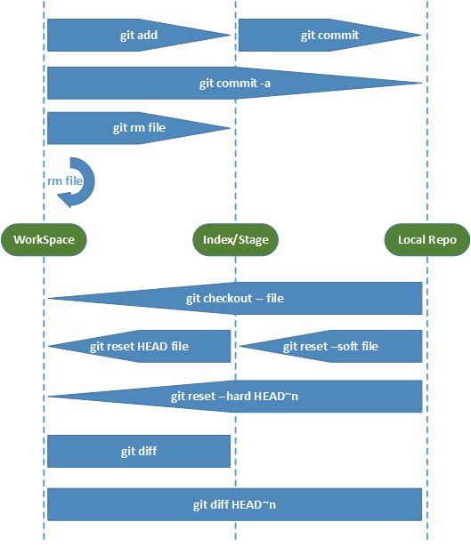

git
Table of Contents
概述
git是分布式的版本管理系统，每个终端都包含有一个本地仓库(repository)，使用git push，git pull在不同仓库间同步信息。
通过git init创建一个本地仓库。本地仓库位于.git文件夹下。
原理
git有4中对象：
- blob:保存文件对象
- tree:管理blob和tree对象，类似文件系统。
- commit:指向一个tree对象（这个tree对象保存了一个提交时的workspace快照），记录提交者、注释。
- tag:指向一个commit。
安装配置
安装git
sudo apt-get install git git-core
配置本机的git
$ git config --global user.name "rexhouy"
$ git config --global user.email rex.houy@gmail.com
生成密钥
$ ssh-keygen -t rsa -C "rex.houy@gmail.com"
提交密钥
vim /home/rexhouy/.ssh/id_rsa.pub //复制里面的密钥
检验是否链接上了github
ssh -T git@github.com
本地仓库
创建新仓库
创建新文件夹，打开，然后执行
git init
以创建新的 git 仓库。
检出仓库
执行如下命令以创建一个本地仓库的克隆版本：
git clone /path/to/repository
如果是远端服务器上的仓库，你的命令会是这个样子：
git clone username@host:/path/to/repository
添加，删除与提交
你可以计划改动（把它们添加到缓存区），使用如下命令：
git add <filename> git add * git rm <filename> git rm -r <directory>
可以使用git diff, git status查看workspace与repository的状态。（有哪些文件是未被跟踪的，有哪些文件发生了变动）
这是 git 基本工作流程的第一步；使用如下命令以实际提交改动：
git commit -m "代码提交信息"
现在，你的改动已经提交到了 HEAD，但是还没到你的远端仓库。
回滚
使用服务器端的版本替换本地改动
假如你做错事（自然，这是不可能的），你可以使用如下命令替换掉本地改动：
git checkout -- <filename>
此命令会使用 HEAD 中的最新内容替换掉你的工作目录中的文件。已添加到缓存区的改动（commit），以及新文件，都不受影响。
假如你想要丢弃你所有的本地改动与提交，可以到服务器上获取最新的版本并将你本地主分支指向到它：
git fetch origin git reset --hard origin/master
回滚到指定版本
git rest --hard <commit id>
<commit id>可以通过git log或者git reflog查找。
总结

Stash操作
用于保存当前状态。每次通过stash保存的内容都会被压入stash栈。 保存stash
git stash save
恢复stash
# 使用栈顶来还原WorkSpace
git stash apply
# 使用栈顶来还原WorkSpace，同时从stash栈中删除当前的栈顶stash
git stash pop
# 还原到某个stash，可以通过过git stash list来查寻stash
git stash apply stash@{n}
远程仓库
推送改动
你的改动现在已经在本地仓库的 HEAD 中了。执行如下命令以将这些改动提交到远端仓库：
git push origin master
可以把 master 换成你想要推送的任何分支。
如果你还没有克隆现有仓库，并欲将你的仓库连接到某个远程服务器，你可以使用如下命令添加：
git remote add origin <server>
如此你就能够将你的改动推送到所添加的服务器上去了。
分支
分支是用来将特性开发绝缘开来的。在你创建仓库的时候，master 是“默认的”。在其他分支上进行开发，完成后再将它们合并到主分支上。
创建一个叫做“feature_x”的分支，并切换过去：
git checkout -b feature_x
切换回主分支：
git checkout master
再把新建的分支删掉：
git branch -d feature_x
除非你将分支推送到远端仓库，不然该分支就是 不为他人所见的：
git push origin <branch>
更新与合并
要更新你的本地仓库至最新改动，执行：
git pull
以在你的工作目录中 获取（fetch） 并 合并（merge） 远端的改动。 要合并其他分支到你的当前分支（例如 master），执行：
git merge <branch>
两种情况下，git 都会尝试去自动合并改动。不幸的是，自动合并并非次次都能成功，并可能导致 冲突（conflicts）。 这时候就需要你修改这些文件来人肉合并这些 冲突（conflicts） 了。改完之后，你需要执行如下命令以将它们标记为合并成功：
git add <filename>
在合并改动之前，也可以使用如下命令查看：
git diff <source_branch> <target_branch>
引用repository
add Common.git as a submodule at the path "common" inside this repo
git submodule add /var/Common.git common
initialize it, clone, and check out a copy
git submodule update --init
commit the addition of the submodule
git commit
update submodules
git submodule foreach git pull
删除submodule
Remove relevent info from .gitmodule
Remove relevent info from .git/config
git rm –cached module_path
if git rm report error, try git add .gitmodule, and then run git rm again.
更新
Update .gitmodule
update .git/config
git submodule sync
Fetch updates from upstream
- Config a remote that points to the upstream repository
git remote add upstream xxx git remote -v # view configured remote
- Fetch updates from upstream
git fetch upstream
- Merge updates into current brunch
git merge upstream/master
.gitignore
- ”/”开头表示目录
- ”*”通配多个字符
- ”?”通配单个字符
- ”[]“包含单个字符的匹配列表
- ”!”表示不忽略匹配到的文件或目录
例子：
foo/*：忽略目录 foo下的全部内容
*.[oa]：忽略所有.o和.a文件
!calc.o：不能忽略calc.o文件
Proxy
export all_proxy=socks5://127.0.0.1:1080
命令速查
创建版本库
$ git clone <url> #克隆远程版本库 $ git init #初始化本地版本库
修改和提交
$ git status #查看状态 $ git diff #查看变更内容 $ git add . #跟踪所有改动过的文件 $ git add <file> #跟踪指定的文件 $ git mv <old> <new> #文件改名 $ git rm <file> #删除文件 $ git rm --cached <file> #停止跟踪文件但不删除 $ git commit -m “commit message” #提交所有更新过的文件 $ git commit --amend #修改最后一次提交
查看提交历史
$ git log #查看提交历史 $ git log -p <file> #查看指定文件的提交历史 $ git blame <file> #以列表方式查看指定文件的提交历史
撤消
$ git reset --hard HEAD #撤消工作目录中所有未提交文件的修改内容 $ git checkout HEAD <file> #撤消指定的未提交文件的修改内容 $ git revert <commit> #撤消指定的提交
分支与标签
$ git branch #显示所有本地分支 $ git checkout <branch/tag> #切换到指定分支或标签 $ git branch <new-branch> #创建新分支 $ git branch -d <branch> #删除本地分支 $ git tag #列出所有本地标签 $ git tag <tagname> #基于最新提交创建标签 $ git tag -d <tagname> #删除标签
合并与衍合
$ git merge <branch> #合并指定分支到当前分支 $ git rebase <branch> #衍合指定分支到当前分支
远程操作
$ git remote -v #查看远程版本库信息 $ git remote show <remote> #查看指定远程版本库信息 $ git remote add <remote> <url> #添加远程版本库 $ git fetch <remote> #从远程库获取代码 $ git pull <remote> <branch> #下载代码及快速合并 $ git push <remote> <branch> #上传代码及快速合并 $ git push <remote> :<branch/tag-name> #删除远程分支或标签 $ git push --tags #上传所有标签